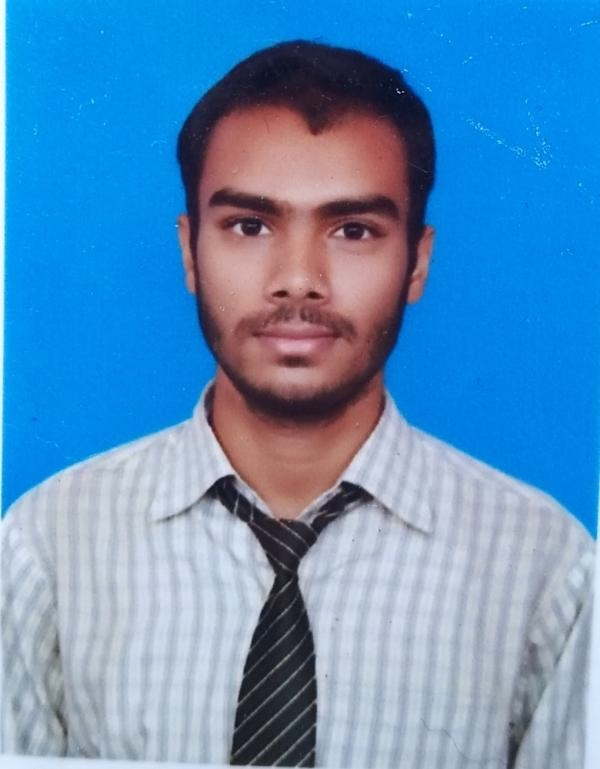

Ashirvad Kumar

Aspiring software Developer
Objective
Observe, Learn, Initiate, Execute, Succeed….. Repeat.
To learn, grow and contribute in the field of Software Development
&designing with an organization that provides me such opportunities
Education
- Technocrats Institute of Technology, BHOPAL,
2022-2024,
Masters in Computer Applications.
- Gossner College, Ranchi, Jharkhand,
2018-2021,
Graduate in PHYSICS with 8.36 CGPA.
- St. Paul’s College, Ranchi, Jharkhand,
2015 - 2017,
Higher Secondary Certificate with 69%.
- BRL DAV Public School, Bhandaridah, Bokaro, Jharkhand,
2009 - 2015,
Secondary School Certificate with 8.6 CGPA.
Work Experience
Completed 3 months Salesforce Virtual Internship Program(June 2022)
Certificate No.- SISFVIPAD2022-7328
Skills
- C -Intermediate
- Java -Beginner
- HTML-CSS -Beginner
- Microsoft office-Intermediate
- Python-Intermediate
- SQL-Intermediate
Achievements
- Enrolled in NCC-Air Wing (2019-2022) and attended National camps, for
discipline in life, team work, Leadership skills and nation building.
- Got a golden opportunity of being a Co-pilot in micro-light aircraft.
- Active participation in Sports and Cultural activities at School and College
level.
Contact
Linkedin:-Ashirvad Kumar
Mail to:-Ashirvad Kumar
Hobbies
- Playing Kabaddi
- Cycling
- Listening Music
- Exploring new places
- Dancing